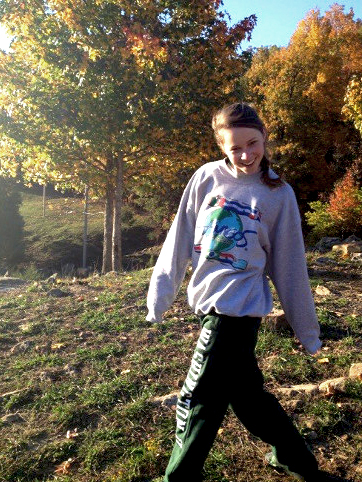

Claire Mai
Nickname/Rapper Name: $ Claire "mo' muni" Mai $
Year in School:Junior
School/Major: International & Area Studies
Hometown: Houston
Medical Training:WFR
Wash U Activities: mostly WP, sustainability stuff, and eatin stuff
Spirit Flora/Fauna:missouri lowland pineapple OR wild donuts
Title of Your Autobiography:How Many Carrots Does It Take To Turn You Orange? And Other Ponderables
Favorite Wildersnack:M&Ms
Crunchy or Creamy Peanut Butter?:CRUNCHY don't even get that creamy pb near me ok
Weird Body Fact: can turn my arm all the way around ~~freaky~~
Favorite Type of Cheese:sweaty
Describe WP in 5 Words: steering fire must never die
What is Your Favorite Place in the World? the top of a cuddle puddle
How many WP leaders does it take to screw in a lightbulb? did we consensus screwing in a lightbulb? let's not get ahead of ourselves
Favorite Quotation: "drop it like a Zod" - unknown
What causes the emission of short bursts of light from imploding bubbles in a liquid when excited by sound?: koalas look so scary when they're wet yall should google this
Your greatest adventure:showering in the dark - - just for the thrill of it
Advice for an Incoming Freshman: bury your head in your hands and shake them back and forth it feels like someone's ruffing your hair but don't say "good job kid" people get weird -- words of wisdom
Solve for x: YOU solve for x I'm doin' business here